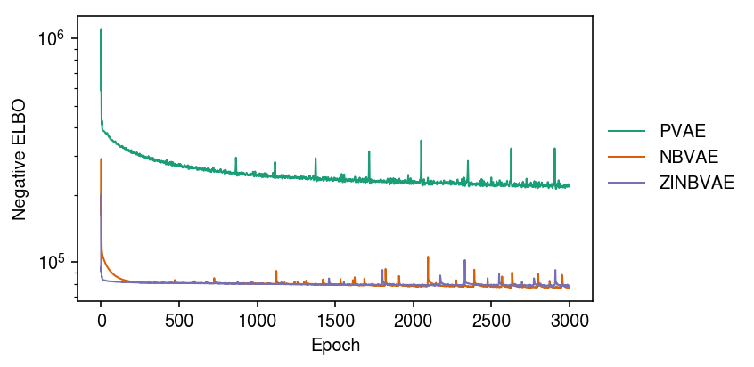
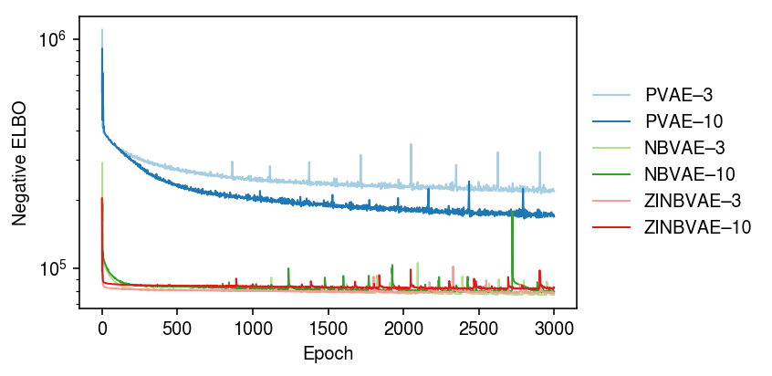
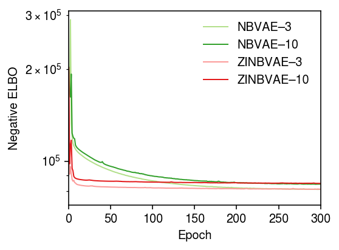

Variational autoencoders for scRNA-seq data
Table of Contents
Introduction
Variational autoencoders fit a generative model parameterized by a neural network (Kingma and Welling 2014, Rezende and Mohammed 2014). Our model of interest is \( \newcommand\const{\mathrm{const}} \newcommand\E[1]{\left\langle #1 \right\rangle} \newcommand\vx{\mathbf{x}} \newcommand\vw{\mathbf{w}} \newcommand\vz{\mathbf{z}} \newcommand\mx{\mathbf{X}} \newcommand\mU{\mathbf{U}} \newcommand\mw{\mathbf{W}} \newcommand\mz{\mathbf{Z}} \newcommand\ml{\mathbf{L}} \newcommand\mf{\mathbf{F}} \)
\begin{align*} x_{ij} \mid \lambda_{ij} &\sim \operatorname{Poisson}(\lambda_{ij})\\ \lambda_{ij} \mid \vz_i, u_{ij} &= \mu(\vz_i)_j\, u_{ij}\\ u_{ij} &\sim p(u_{ij})\\ \vz_i &\sim \mathcal{N}(\boldsymbol{0}, \mathbf{I}_K) \end{align*}where \(\mu(\cdot)\) is a \(p\)-dimensional output of a fully connected feed-forward neural network. To approximate the intractable posterior \(p(\vz_i \mid \vx_i)\), we use a variational approximation
\[ q(\vz_i \mid \vx_i) = \mathcal{N}(m(\vz_i), \operatorname{diag}(S(\vz_i))) \]
where \(m(\cdot), S(\cdot)\) are \(K\)-dimensional outputs of a FF network.
Remark Unlike previously published methods (e.g. Lopez et al 2018, Eraslan et al. 2018), parameters of \(p(u_{ij})\) are not outputs of the decoder network, because they describe random effects (assumed to be unstructured).
Fitting VAEs with incomplete data has only recently been studied (Nazabal et al. 2018, Mattei and Frellsen 2018). The key idea is that if the coordinates of \(\vx_i\) are separable (meaning the likelihood factorizes) and coordinates are missing at random, then maximizing the log likelihood (or a lower bound to the log likelihood) of only the observed coordinates is a statistically sound procedure. In this case, the lower bound is
\[ \ell \triangleq \sum_{i, j} \E{w_{ij} \ln\left(\int_0^\infty \operatorname{Poisson}(x_{ij}; \mu(\vz_i)_j\, u_{ij})\; dp(u_{ij})\right)} - \sum_{i} \E{\ln\left(\frac{q(\vz_i \mid f(\vx_i))}{p(\vz_i)}\right)}\]
where \(f\) is some imputation function (e.g., fill in missing values with zero) and expectations are taken with respect to \(q\). For easy choices of \(p(u_{ij})\), the integrals inside the expectation are analytic. Mattei and Frellsen 2018 suggest filling missing data with 0 in the encoder network works, and that a tighter bound can be achieved using importance sampling (Burda et al. 2016)
\[ \ell_{\text{IWAE}} \triangleq \sum_i \E{\ln\left(\frac{1}{S} \sum_{s=1}^S \frac{p(\vx_i, \vz_i^{(s)})}{q(\vz_i^{(s)} \mid \vx_i)}\right)} \]
Setup
import numpy as np import pandas as pd import scmodes import scipy.stats as st import torch
%matplotlib inline %config InlineBackend.figure_formats = set(['retina'])
import matplotlib.pyplot as plt plt.rcParams['figure.facecolor'] = 'w' plt.rcParams['font.family'] = 'Nimbus Sans'
Results
Poisson thinning example
Simulate two independent data sets from the (same) model.
np.random.seed(0) n = 500 p = 100 k = 3 l = np.random.lognormal(sigma=.5, size=(n, k)) f = np.random.lognormal(sigma=.5, size=(p, k)) mu = l @ f.T u = np.random.gamma(shape=.1, scale=10, size=(n, p)) lam = mu * u x = np.random.poisson(lam=lam) xt = torch.tensor(x, dtype=torch.float) x_val = np.random.poisson(lam=lam) xvt = torch.tensor(x_val, dtype=torch.float)
Fit the models. First, fix the latent dimension to the oracle value.
m0 = (scmodes.lra.vae.PVAE(input_dim=p, latent_dim=3) .fit(xt, lr=1e-2, n_samples=10, max_epochs=3000, trace=True)) m1 = (scmodes.lra.vae.NBVAE(input_dim=p, latent_dim=3, disp_by_gene=False) .fit(xt, lr=1e-2, n_samples=10, max_epochs=3000, trace=True)) m2 = (scmodes.lra.vae.ZINBVAE(input_dim=p, latent_dim=3, disp_by_gene=False, logodds_by_gene=False) .fit(xt, lr=1e-2, n_samples=10, max_epochs=3000, trace=True))
Plot the ELBO over the training iterations.
cm = plt.get_cmap('Dark2') plt.clf() plt.gcf().set_size_inches(6, 3) plt.yscale('log') for i, m in enumerate([m0, m1, m2]): plt.plot(m.trace, lw=1, c=cm(i), label=type(m).__name__) plt.legend(frameon=False, loc='center left', bbox_to_anchor=(1, .5)) plt.xlabel('Epoch') plt.ylabel('Negative ELBO') plt.tight_layout()

Now, compare against matched models with latent dimension 10.
m0p = (scmodes.lra.vae.PVAE(input_dim=p, latent_dim=10) .fit(xt, lr=1e-2, n_samples=10, max_epochs=3000, trace=True)) m1p = (scmodes.lra.vae.NBVAE(input_dim=p, latent_dim=10, disp_by_gene=False) .fit(xt, lr=1e-2, n_samples=10, max_epochs=3000, trace=True)) m2p = (scmodes.lra.vae.ZINBVAE(input_dim=p, latent_dim=10, disp_by_gene=False, logodds_by_gene=False) .fit(xt, lr=1e-2, n_samples=10, max_epochs=3000, trace=True))
cm = plt.get_cmap('Paired') plt.clf() plt.gcf().set_size_inches(6, 3) plt.yscale('log') for i, m in enumerate([m0, m0p, m1, m1p, m2, m2p]): plt.plot(m.trace, lw=1, c=cm(i), label=f'{type(m).__name__}–{m.encoder.mean.out_features}') plt.legend(frameon=False, loc='center left', bbox_to_anchor=(1, .5)) plt.xlabel('Epoch') plt.ylabel('Negative ELBO') plt.tight_layout()

Zoom in on NBVAE, ZINBVAE.
cm = plt.get_cmap('Paired') plt.clf() plt.gcf().set_size_inches(4, 3) plt.yscale('log') for i, m in enumerate([m0, m0p, m1, m1p, m2, m2p]): if i > 1: plt.plot(m.trace, lw=1, c=cm(i), label=f'{type(m).__name__}–{m.encoder.mean.out_features}') plt.xlim(0, 300) plt.legend(frameon=False) plt.xlabel('Epoch') plt.ylabel('Negative ELBO') plt.tight_layout()

Evaluate the estimated \([\lambda_{ij}]\) on the validation data.
pd.Series({f'{type(m).__name__}-{m.encoder.mean.out_features}':
st.poisson(mu=m.denoise(xvt)).logpmf(x_val).mean() for m in (m0, m0p, m1, m1p, m2, m2p)})
PVAE-3 -5.047203 PVAE-10 -4.236100 NBVAE-3 -5.540319 NBVAE-10 -5.610215 ZINBVAE-3 -9.574759 ZINBVAE-10 -9.707689 dtype: float64
Compare against NMF.
# Best will be > oracle rank due to fitting u l, f, _ = scmodes.lra.nmf(x, rank=27) st.poisson(mu=l.dot(f.T)).logpmf(x_val).mean()
-5.082246093625973
This comparison may not be fair, because NMF/PVAE are estimating \(\lambda_{ij}\) by maximizing the likelihood (or a variational lower bound to the evidence), where NBVAE/ZINBVAE are estimating the posterior mean \(\lambda_{ij}\), which may be shrunk compared to the MLE.
Imputation example
Simulate some data from the model. Mask 10% of the entries.
np.random.seed(0) n = 500 p = 100 k = 3 l = np.random.lognormal(sigma=.5, size=(n, k)) f = np.random.lognormal(sigma=.5, size=(p, k)) mu = l @ f.T u = np.random.gamma(shape=.1, scale=10, size=(n, p)) lam = mu * u x = np.random.poisson(lam=lam) xt = torch.tensor(x, dtype=torch.float) w = np.random.uniform(size=x.shape) < 0.9 wt = torch.tensor(w.astype(np.float32), dtype=torch.float)
Fit the models.
m0 = (scmodes.lra.vae.PVAE(input_dim=p, latent_dim=3) .fit(xt, w=wt, lr=1e-2, n_samples=10, max_epochs=2000, verbose=True)) m1 = (scmodes.lra.vae.NBVAE(input_dim=p, latent_dim=3, disp_by_gene=False) .fit(xt, w=wt, lr=1e-2, n_samples=10, max_epochs=2000, verbose=True)) m2 = (scmodes.lra.vae.ZINBVAE(input_dim=p, latent_dim=3, disp_by_gene=False, logodds_by_gene=False) .fit(xt, w=wt, lr=1e-2, n_samples=10, max_epochs=2000, verbose=True))
Evaluate the imputation loss.
pd.Series({type(m).__name__: np.where(w, st.poisson(mu=m.decoder.forward(m.encoder.forward(xt.cuda())[0]).detach().cpu().numpy()).logpmf(x), 0).sum() for m in (m0, m1, m2)})
PVAE -239298.698822 NBVAE -274276.617000 ZINBVAE -326857.867842 dtype: float64
Compare against NMF.
l, f, _ = scmodes.lra.nmf(x, w=w, rank=30) np.where(w, st.poisson(mu=l @ f.T).logpmf(x), 0).sum()
-158786.32484083134